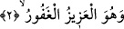

Çünkü bu makam ayakların kayabilecek olduğu bir makamdır.
“Ve onun her şeye gücü yeter.” Yâni bir olan Allah’ın her şeye, her türlü makdûrâta,
nimet vermeye,varlıkları bir hâlden diğer hâle geçirmeye ve başka şeylere gücü yeter.
Bunlara son derece kadirdir ve bunları en uç noktasına kadar yapmaya gücü yeter.
Sonsuz hikmete dayalı olan, irâdesi gereği dilediği gibi tasarrufta bulunur. Bu cümle
daha önce geçen sıla cümlesine mâtuf olup o cümlenin mânâsını ifâde etmekte ve Allah
Teâlâ’nın saltanat hükümlerinin son derece muazzam ve dakik işlerde cereyan ettiğini
beyân etmektedir. Bâzı âlimlere göre “O’nun her şeye gücü yeter” demek, O’nun
dilemesinin mümkün olan mâdum nesnelere taalluk etmesi demektir. Çünkü vâcip olan
mevcûd kendi varlığı için başka bir şeye muhtaç değildir. Onun varlığının yok olması,
ezelden ebede kadar mümkün değildir. Mümkinü’l-vücûd’un var edilmesi de murâd
olunmaz. Çünkü bu tahsilu’l- hâsıl; yâni var olan şeyi bir daha elde etmek demektir.
“Mâdûmu’l-münteni”in ise var edilmesi mümkün değildir. Çünkü Allah’ın dilemesi
böyle bir mâdûma taalluk etmez. Allah’ın kudretinin mâdûma taalluk etmesi; yâni
bağlanması, onu var etmek sûretiyle gerçekleşir. Mevcûd olana bağlanması ise onu
dilediği şekilde; olduğu hâl üzere bırakmak ve bir hâlden diğer hâle geçirmek demektir.
Kâşânî’nin tefsirine göre âyet-i kerîmenin mânâsı şudur: O mümkinattan yok olan her
şeye kadirdir. Onu dilediği şekilde var eder. Çünkü kudretin bir şeye yaklaşması o şeyi
mümkün kılar. Zira kudret mümkün ile ta’lil edilir ve şöyle söylenir: “Şu nesne var
edilebilir çünkü o mümkündür.”
et-Te’vilâtü’n-necmiyye’ye göre âyetin mânâsı şöyledir: Allah Teâlâ zât, sıfat, isim
ve fiillerinde azimdir, yücedir. O öyle bir Allah’tır ki mukayyed vücudlara taşan mutlak
vücûdun saltanatı, O’nun mutlak dopdolu ve cömert elindedir. Onun mutlak hüviyeti her
şeyde zâhirdir. O her şeye kadirdir.
2. O ki, hanginizin daha güzel davranacağını sınamak için ölümü ve hayatı
yaratmıştır. O, mutlak gâliptir, çok bağışlayıcıdır.
“O ki, hanginizin daha güzel davranacağını sınamak için ölümü ve hayatı
yaratmıştır.” Bu âyetten itibâren mülkiyetin bâzı hükümlerinin ve bir kısım kudret
eserlerinin îzâhına başlanmaktadır. Buradaki “ellezi” ism-i mevsûlü, önce geçen ism-i
mevsulden bedeldir. Buna göre âyet tilâvet olunurken bu ism-i mevsul üzerinde vakıf
yapılmaz.
Ehl-i sünnete göre “mevt/ölüm” vücûdi bir sıfat olup tıpkı sıcaklık ve soğukluk gibi
hayatın zıddıdır. “Hayat” da vücûdî bir sıfat olup nefsin üzerinde fazladan bir niteliktir.
Hayat, ilim ve kudret sıfatlarından farklı olup nefsi bu iki sıfatla sıfatlanmaya uygun